Scalar relativistic Hamiltonians¶
Code author: Prakash Verma and Francesco A. Evangelista
Section author: Prakash Verma, Wallace D. Derricotte, and Francesco A. Evangelista
The exact-two-component (X2C) approch is a convenient way to introduce scalar relativistic effects in DFT and wave function-based methods. Psi4 implements the spin-free one-electron version of X2C, which produces a modified one-electron Hamiltonian 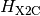:
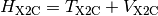
that is a sum of a kinetic energy (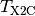) and potential energy (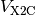) operator. Our implementation is equivalent to the one reported by Cheng and Gauss [Cheng:084114]. X2C calculations require the use of special (alternatively fully uncontracted) basis sets designed for relativistic calculations. Common choices include the Dunning Douglass–Kroll basis sets (cc-pVXZ-DK, cc-pCVXZ-DK, cc-pwCVXZ-DK) and Roos’ ANO basis sets.
Note
See also Interface to DKH by A. Wolf, M. Reiher, and B. A. Hess for another relativistic Hamiltonian.
A First Example¶
The following is a simple input that will perform a Hartree–Fock calculation using the X2C Hamiltonian.
molecule {
H
F 1 0.92
}
set {
scf_type pk
basis cc-pvdz-decontract
relativistic x2c
}
energy('hf')
This computation yields the following result:
@RHF Final Energy: -100.10545426415609
=> Energetics <=
Nuclear Repulsion Energy = 5.1767335622934780
One-Electron Energy = -150.7826788086396448
Two-Electron Energy = 45.5004909821901009
Total Energy = -100.1054542641560516
while a non-relativistic calculation yields the following energy:
@RHF Final Energy: -100.01041683847258
=> Energetics <=
Nuclear Repulsion Energy = 5.1767335622934780
One-Electron Energy = -150.6714586298456027
Two-Electron Energy = 45.4843082290795309
Total Energy = -100.0104168384725796
Basis sets options¶
The X2C module in Psi4 supports different combinations of basis set.
By default, if the input file specifies only the basis keyword, then the X2C
module will solve the modified Dirac equation in an uncontracted basis and then
recontract the X2C Hamiltonian in the original basis.
Alternatively, the user can use the rel_basis keyword to specify a different
basis set to solve the modified Dirac equation.
set {
basis cc-pvdz-dk
rel_basis cc-pvtz-dk
relativistic x2c
}
It is recommended that when employing the X2C relativistic Hamiltonian, that you use a fully decontracted basis set. This can be done simply in the input by adding “-decontract” to the name of the primary basis you want to use for the calculation as detailed in Decontracted Basis Sets. Publications resulting from the use of X2C should cite the following publication: [Verma:2015]
Theory¶
X2C is based on exact decoupling of positive-energy ( 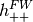 ) and negative-energy (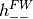 ) blocks of the Dirac Hamiltonian (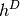).
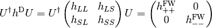
The transformation (  ) is obtained from the solutions of the Dirac equation in kinetically balanced basis [Kutzelnigg:1984] treatment.
In the X2C treatment, the positive-energy block of the Hamiltonian ( )
is given by the sum
of a transformed kinetic () and potential energy ( ) contribution.
Relativistic kinetic energy ( ) and nuclear-electron interaction potential ( ) is given interms of non-relativisitc kinetic (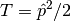) energy and nuclear-electron interaction potential (
) is obtained from the solutions of the Dirac equation in kinetically balanced basis [Kutzelnigg:1984] treatment.
In the X2C treatment, the positive-energy block of the Hamiltonian ( )
is given by the sum
of a transformed kinetic () and potential energy ( ) contribution.
Relativistic kinetic energy ( ) and nuclear-electron interaction potential ( ) is given interms of non-relativisitc kinetic (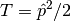) energy and nuclear-electron interaction potential ( ), coupling matrix (
), coupling matrix (  ) and renormalization matrix (
) and renormalization matrix (  ).
).
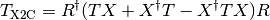
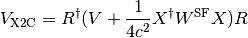
The coupling matrix ( 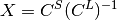 ) is obtained from the large (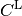) and small (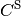) components of the  positive energy solutions of the Dirac equation.
The renormalization matrix
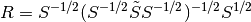,
depends on the modified overlap matrix
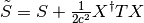. The integrals
positive energy solutions of the Dirac equation.
The renormalization matrix
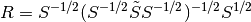,
depends on the modified overlap matrix
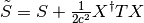. The integrals  can be easily computed as derivatives of the nuclear-electron attraction integrals with respect to nuclear coordinates.
Existing nonrelativistic electronic structure code can be extended to include scalar relativistic effects
treated with the X2C method by replacing nonrelativistic kinetic and potential energy with the corresponding
X2C operators 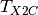 and 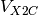. It is important to note that fully uncontracted basis in needed for the construction of X2C Hamiltonian as Foldy-Wouthuysen (FW [FW:1950]) transformation is obtained in kinetically balance basis.
can be easily computed as derivatives of the nuclear-electron attraction integrals with respect to nuclear coordinates.
Existing nonrelativistic electronic structure code can be extended to include scalar relativistic effects
treated with the X2C method by replacing nonrelativistic kinetic and potential energy with the corresponding
X2C operators 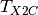 and 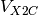. It is important to note that fully uncontracted basis in needed for the construction of X2C Hamiltonian as Foldy-Wouthuysen (FW [FW:1950]) transformation is obtained in kinetically balance basis.
Keywords¶
RELATIVISTIC¶
Relativistic Hamiltonian type
- Type: string
- Possible Values: NO, X2C
- Default: NO